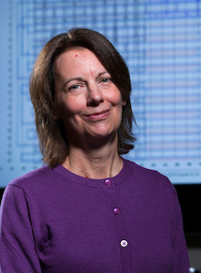

Iowa State University
Distinguished Professor of Computer Science
Faculty Member, Bioinformatics and Computational Biology
Director, Laboratory for Software Safety (LSS)
Co-Director, Laboratory for Molecular Programming (LAMP)
ACM Distinguished Scientist
IEEE Fellow
Faculty Member, Bioinformatics and Computational Biology
Director, Laboratory for Software Safety (LSS)
Co-Director, Laboratory for Molecular Programming (LAMP)
ACM Distinguished Scientist
IEEE Fellow
Short CV
Publications

Federally funded research projects
- NASA University Leadership Initiative: A Safety-Aware Ecosystem of Interconnected and Reputable sUAS (NASA)
- Towards Variability-Aware Software Analysis and Testing (NSF)
- Design for Dependability in Systems of Molecular Programs (NSF)
- Safety-Aware Cyber-Molecular Systems (NSF)
- Advanced Traceability for Composing Product Line Safety Cases (NSF)
- Robust Molecular Programming: Advances in the Design and Verification of Reliable Self-Assembling Nanosystems (NSF)
- Evidence-based Reliability Assessment of Software Product Lines (NSF)
- Modeling and Analysis of Molecular Programming and Nanoscale Self-Assembly (NSF)
- Decision Support System for Reasoning with Preferences (NSF)
- Software Design and Productivity Summit (NSF)
- Safety Analysis of Evolving Product Lines (NSF)
- Interactive and Verifiable Composition of Web Services To Satisfy End User Goals (NSF)
- Safety Analysis for Critical Product Lines (NSF)
- Natural Language in the Development of High-Confidence Software (NSF)
Research interests
- Software engineering
- Software safety
- Molecular programming and nanoscale self-assembly
- Safety-critical product lines
- Requirements engineering
- Formal methods for specification and verification
- Fault monitoring, diagnostics and recovery
Teaching
- Com S 415/515, Software System Safety
- Com S/SE 409/509, Software Requirements Engineering
- Com S 419/519, Trustworthy Healthcare Software
- Com S/SE 417, Software Testing
- Com S 665A, Advanced Topics in Software Engineering Foundations:
Trustworthy Health Software - Com S 665A, Advanced Topics in Software Engineering Foundations:
Safety and Security Requirements for Augmented and Virtual Reality
Recent activities
- Program Committee, FSE 2025, IVR Track
- Program Committee, ICSE 2024, Technical Track
- Program Committee, RE 2024
- Program Committee, ICSE 2022, NIER Track
- Keynote, SPLASH Onward! 2021
- Program Committee, ICSE 2021
- Lifetime Service Award, RE 2021
- Program Committee, RE@Next! Track, RE 2021
- Program Committee, REFSQ 2021
- Program Committee, FormaliSE 2019
- Program Committee, ICCPS 2019
- Keynote, SafeComp 2018
- Associate Editor, IEEE Transactions on Software Engineering 2002-2007, 2013-2017
- Editorial Boards:
- Requirements Engineering, 2002-present
- Software and Systems Modeling (SoSyM), 2006-2013
- Software Testing, Verification and Reliability (STVR), 2011-2013
- IFIP Working Group 2.9, Requirements Engineering
- Steering Committee, RE, 2006-2011, 2014-2019
- Program Committee, NanoCom 2018
- College of Liberal Arts and Sciences Dean's Lecture, 2017
- Program Board, ICSE 2017
- Keynote, RE 2016
- Program Chair, RE 2014
Robyn R. Lutz
Department of Computer Science
230 Atanasoff Hall
Iowa State University
Ames, Iowa, 50011-1041
Phone: (515) 294-3654 / fax: (515) 294-0258